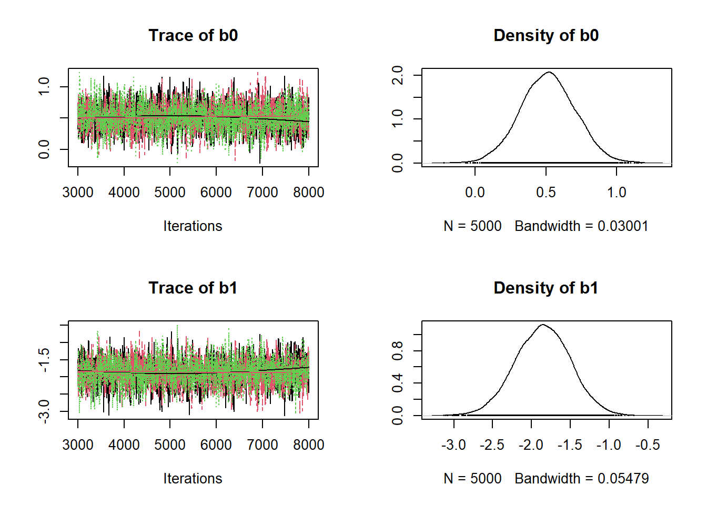
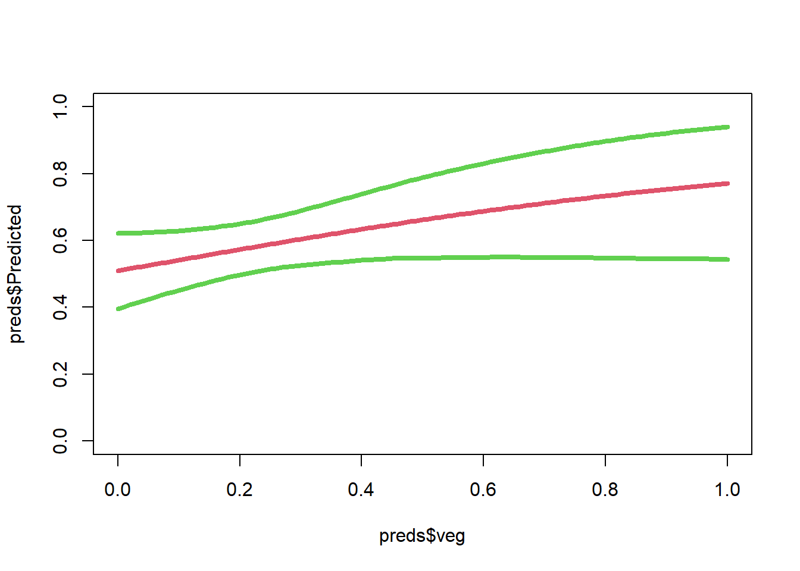
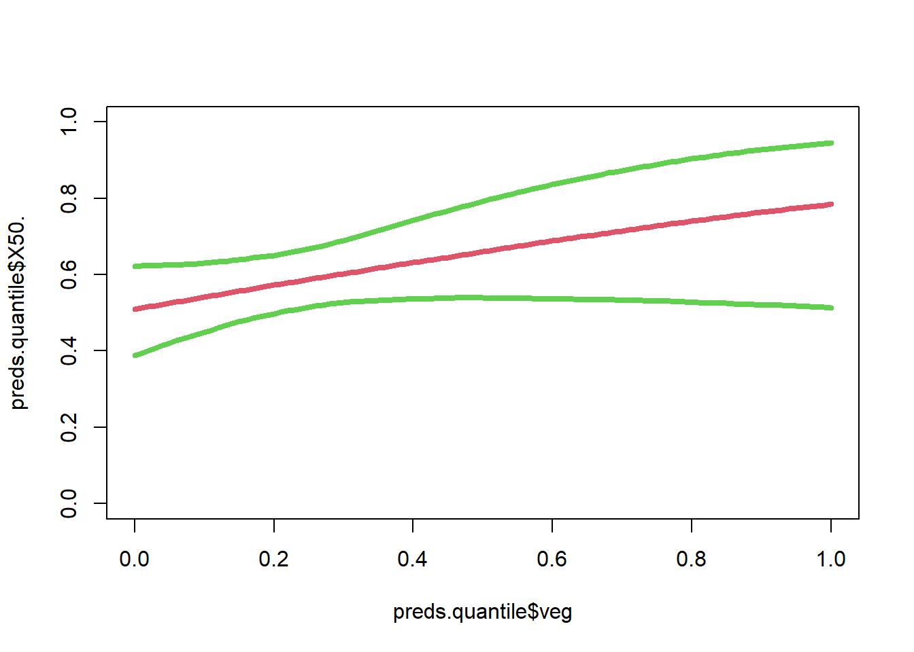

Hierarchical Bayesian Occupancy Lab
Setup Data and Packages
#Look at the data
head(bunny) ShrubHabitat Veg Observed1 Observed2
1 1 0.45 1 1
2 1 0.08 0 0
3 1 0.84 0 0
4 1 0.01 0 0
5 0 0.96 0 0
6 0 0.55 0 0Fit Occupancy Models
JAGS
# Date setup with covaraite
data=list(
y=bunny.data,
n.sites=nrow(bunny.data),
n.visits=ncol(bunny.data),
veg = bunny$Veg
)
params=c("a0","a1","b0","b1")
inits <- function(){list(z=apply(bunny.data, 1, max), a0=rnorm(1), b0=rnorm(1),a1=rnorm(1), b1=rnorm(1))}
# Settings for MCMC chains
nchains<-3
niter<-5000
nburn<-1000
nthin<-1
jm=jags.model(file="occ.model.cov.JAGS.R", data=data, inits=inits, n.chains=nchains, n.adapt=2000)
# Run the burn-in portion of the model
update(jm, n.iter=nburn)
# Sample from the posterior
M3 = coda.samples(jm, variable.names=params, n.iter=niter, thin=nthin)
#save(M3,file="M3")UBMS/stan
UMF <- unmarkedFrameOccu(y=bunny.data,siteCovs=data.frame(veg = bunny$Veg))
# use R package to fit the same model in stan
model5.stan = stan_occu(~veg ~veg, data=UMF, chains=3, iter=5000)
#save(model5.stan, file="model5.stan")Challenge
Step 1
Ignore detection probability and fit a Bayesian logistic regression model. Use brm or JAGS to fit the model. Compare this slope to your findings from your Bayesian occupancy model slopes - either model5.stan or M3. How are the results different? Think about the issue of ignoring detection probability and what this might mean for your interpretation of an ecological effect?
bunny.ignore.det = apply(bunny.data,1,sum)
bunny.ignore.det[which(bunny.ignore.det==2)]=1
# Now, we have site level observation without replication. A 1 indicates a detection in either column 1 or column 2 or both.
# A zero is no detection for other observation.
# Fit the Bayesian logistic regression model and estimate a slope for the effect of veg (bunny$veg)
bunny.ignore.det [1] 1 0 0 0 0 0 0 1 0 1 0 1 1 0 1 0 0 0 0 1 1 0 1 0 0 1 0 0 1 0 0 0 1 1 0 1 0
[38] 0 0 1 0 1 1 1 1 1 1 0 1 1 0 0 1 0 0 0 1 0 0 1 0 1 0 0 1 1 0 1 1 0 0 1 0 0
[75] 0 1 1 0 1 1 1 0 0 1 0 0 0 1 1 0 1 1 0 0 0 0 0 0 1 1 0 0 1 0 1 0 0 0 0 0 0
[112] 0 0 0 1 0 0 0 1 1 0 0 0 1 0 0 1 0 0 1 1 0 1 1 1 0 0 0 0 1 1 1 0 1 1 0 0 1
[149] 0 1 1 0 0 0 0 0 0 0 1 0 0 1 0 1 0 0 0 0 0 1 1 1 1 1 1 0 0 0 0 0 0 1 1 0 0
[186] 0 0 0 1 0 0 1 0 1 0 0 0 1 0 1 0 0 1 1 1 1 0 1 1 0 1 1 0 0 1 0 0 0 1 1 0 0
[223] 1 1 1 0 1 1 0 0 0 0 0 0 1 0 1 0 0 1 0 1 1 0 0 1 1 1 0 1 0 0 0 0 0 0 1 0 1
[260] 1 0 0 1 1 0 0 0 0 1 1 0 0 0 1 1 0 1 0 0 1 0 1 0 0 0 1 1 0 0 0 1 0 0 1 0 1
[297] 0 0 1 0 0 0 1 0 0 1 0 0 0 0 0 1 1 1 0 0 0 0 1 1 0 1 0 0 1 0 1 0 0 0 0 1 0
[334] 0 0 0 0 1 0 1 0 1 0 0 0 1 0 0 1 0 0 1 1 1 0 0 0 1 0 0 1 0 1 1 1 1 0 1 0 1
[371] 0 1 0 1 0 0 0 0 1 1 0 1 0 0 0 0 1 0 0 1 1 0 1 1 1 0 0 1 1 0Logistic Regression with brm
#Setup a dataframe with the new occurrence data and veg covariate
dat = data.frame(y=bunny.ignore.det, veg=bunny$Veg)
# Use brms to fit a logistic regression model
brm.fit = brm(formula = y~ veg,
data = dat,
family = bernoulli(link = "logit"),
warmup = 2000,
iter = 5000,
chains = 3,
sample_prior = FALSE
)
#save(brm.fit,file="brm.fit")Examine posteriors and traceplots

Logistic Regression with JAGS
# Need to include are covaraite
dat = data.frame(y=bunny.ignore.det, veg=bunny$Veg)
data=list(
y=dat$y,
n.sites=length(dat$y),
veg = dat$veg
)
params=c("b0","b1")
inits <- function(){list(b0=rnorm(1), b1=rnorm(1))}
jm=jags.model(file="logistic.model.cov.JAGS.R", data=data, inits=inits, n.chains=nchains, n.adapt=2000)Compiling model graph
Resolving undeclared variables
Allocating nodes
Graph information:
Observed stochastic nodes: 400
Unobserved stochastic nodes: 2
Total graph size: 1108
Initializing model# Run the burn-in portion of the model
update(jm, n.iter=nburn)
# Sample from the posterior
jags.fit.logistic = coda.samples(jm, variable.names=params, n.iter=niter, thin=nthin)
plot(jags.fit.logistic)
Take-Home
To really see the issue, we should plot the posterior distributions of the slope of vegetation when accounting for detection and ignoring detection. In the below plots, if we ignore detection probability, we see the effect of veg is negative (top plot). However, when we separate detection and occupancy (model M3 and model5.stan), the effect of veg on occupancy is positive. Our conclusion about the the effect of veg is opposite. The differences of the posteriors within each plot are simply due to not running the MCMC iterations long enogugh and different priors.

Step 2
Use model5.stan or M3 to make a prediction plot of occupancy (y-axis) and veg (x-axis).
Using ubms/stan
The predict function works with ubms to get predictions
#We can use the predict function to get predictions of the 'state' or occurence probabiltiy
preds=predict(model5.stan,submodel="state")
#Create dataframe and reorder for plotting
preds=data.frame(preds,veg=bunny$Veg)
preds=preds[order(preds$veg),]
# plot predictions and 95% credible intervals
plot(preds$veg,preds$Predicted,lwd=4,col=2,type="l",ylim=c(0,1))
lines(preds$veg,preds$X2.5.,lwd=4,col=3)
lines(preds$veg,preds$X97.5.,lwd=4,col=3)
Using JAGS model
Using Jags, we need to backtransform parameters ourselves. There is no function to do this for us.
beta0=M3[[1]][,3]
beta1=M3[[1]][,4]
# loop over covariate value and get a posterior distribution for each value
# of veg
preds.veg= matrix(0, ncol=length(beta1),nrow=length(bunny$Veg))
for( i in 1:length(bunny$Veg)){
preds.veg[i,] = beta0+beta1*bunny$Veg[i]
}
dim(preds.veg)[1] 400 5000#Get quantiles from prediction posterior distributions
preds.quantile = apply(preds.veg,1,quantile,probs=c(0.025,0.5,0.975))
preds.quantile = plogis(preds.quantile)
preds.quantile = data.frame(t(preds.quantile),veg=bunny$Veg)
head(preds.quantile) X2.5. X50. X97.5. veg
1 0.5387980 0.6454013 0.7674074 0.45
2 0.4382571 0.5345797 0.6277029 0.08
3 0.5258638 0.7495458 0.9138909 0.84
4 0.3937687 0.5128651 0.6227004 0.01
5 0.5174074 0.7760901 0.9388150 0.96
6 0.5379086 0.6745990 0.8152814 0.55preds.quantile=preds.quantile[order(preds.quantile$veg),]
plot(preds.quantile$veg,preds.quantile$X50.,lwd=4,col=2,type="l",ylim=c(0,1))
lines(preds.quantile$veg,preds.quantile$X2.5.,lwd=4,col=3)
lines(preds.quantile$veg,preds.quantile$X97.5.,lwd=4,col=3)